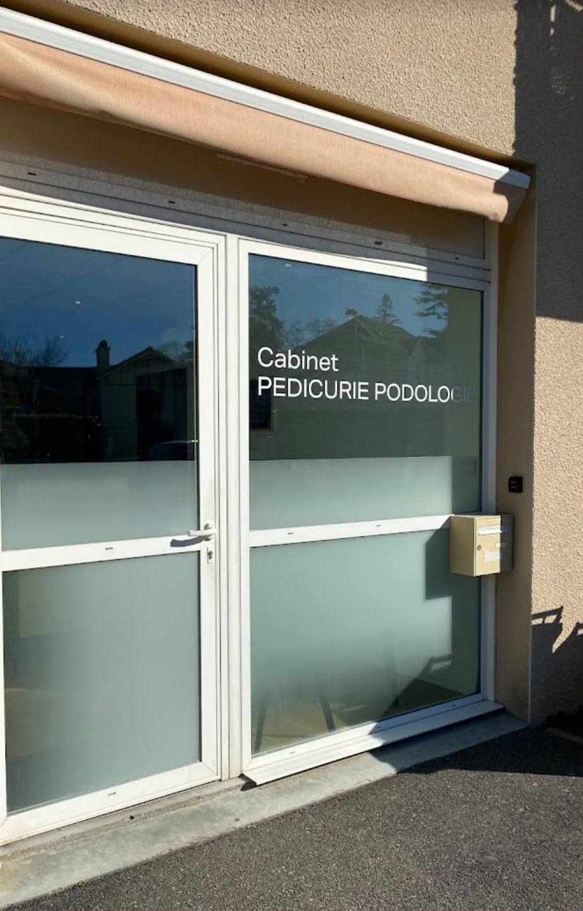
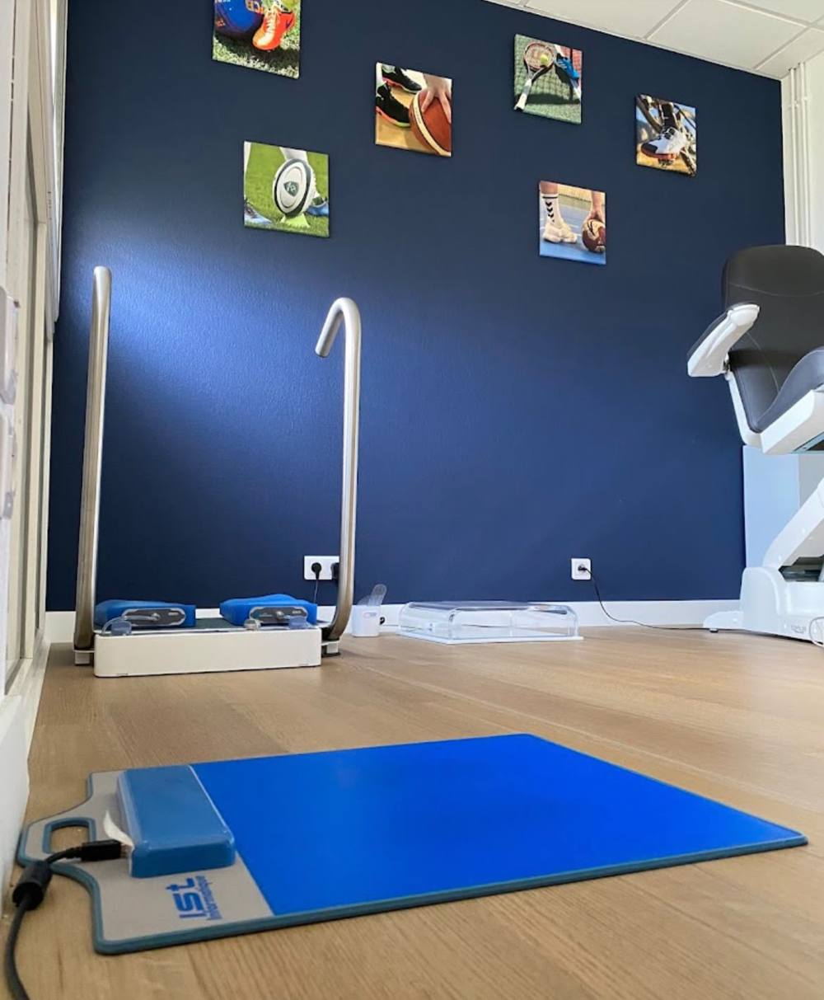
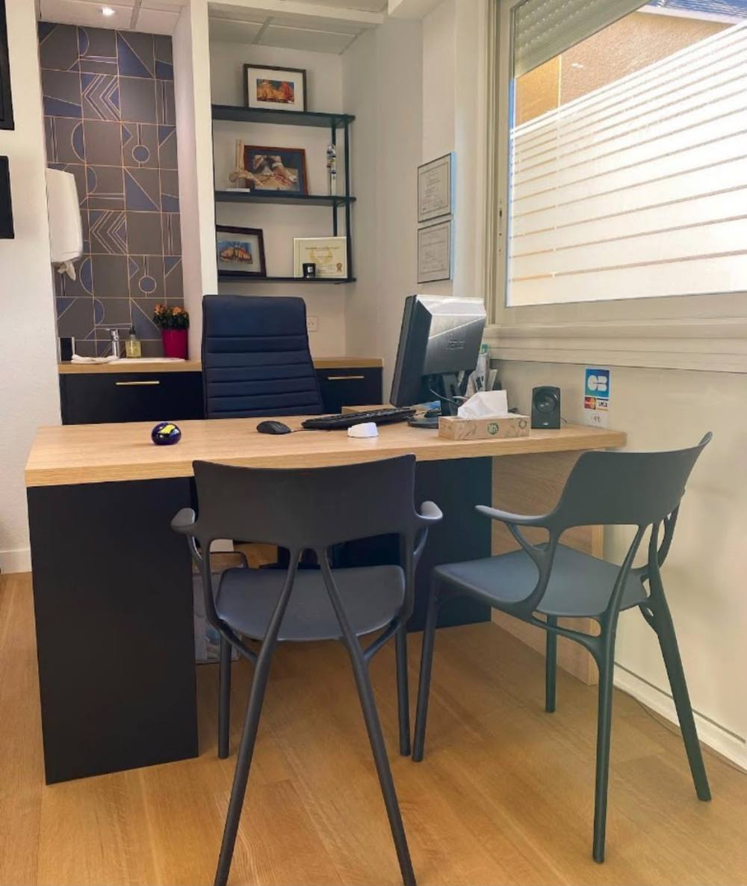
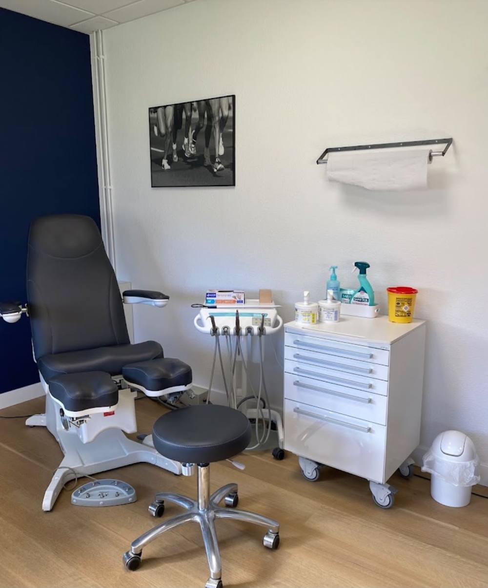
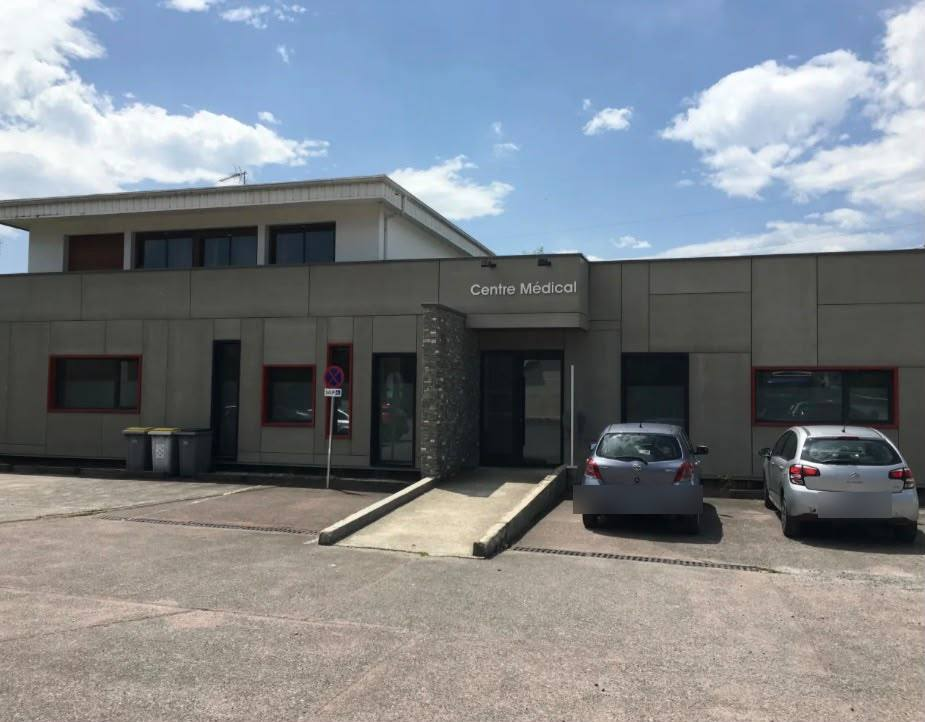
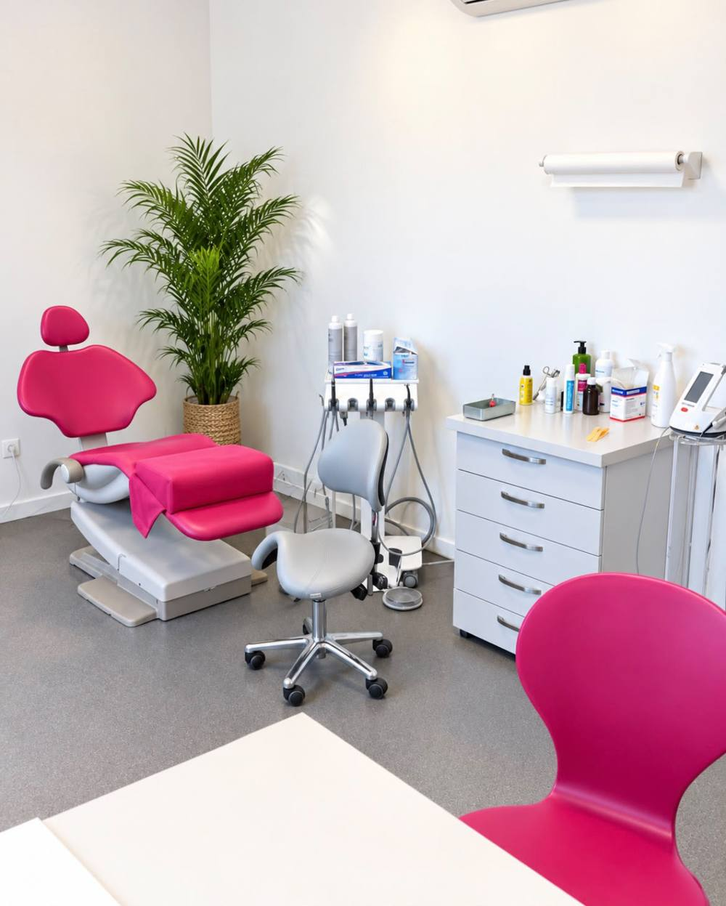
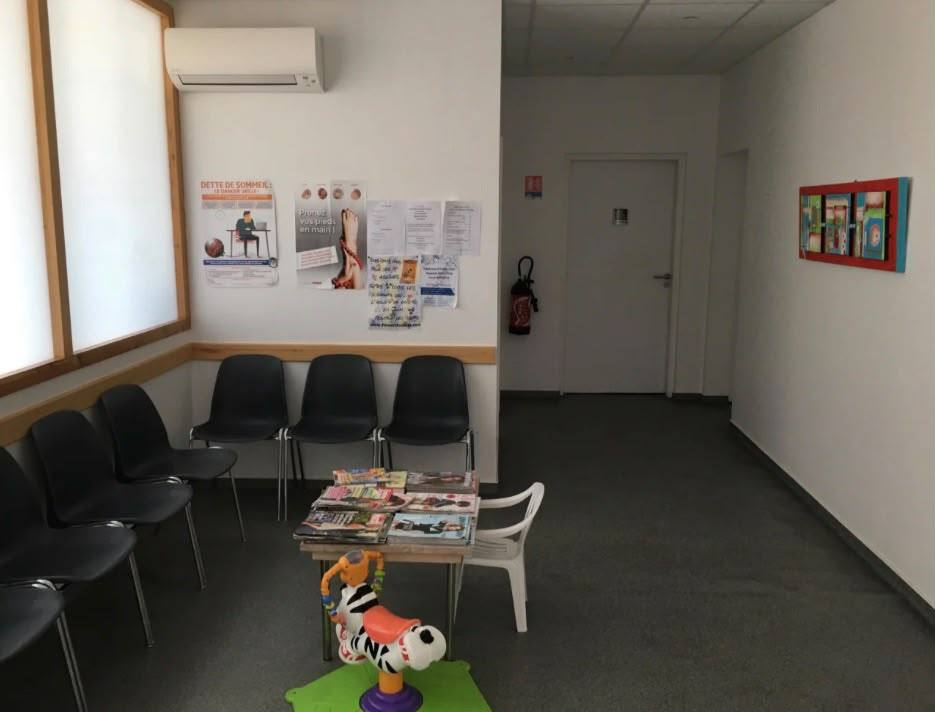

S. Jouanlong Bernadou · S. Rippstein · L. Bricaud · A. Canton
Quatre pédicures-podologues vous reçoivent à Gelos et à Aressy, au cabinet ou à votre domicile. Soins des pieds, semelles orthopédiques, orthonyxie, orthoplastie et K-Laser.

Un bilan est fait à chaque première consultation pour choisir le soin adapté. Touchez un soin pour voir en quoi il consiste.






Quatre pédicures-podologues se partagent les deux cabinets, avec le soutien d'une secrétaire qui répond à vos appels.
Les rendez-vous se prennent par téléphone ou auprès du secrétariat.
05 59 06 92 02Du lundi au vendredi
de 8h à 19h30
Lundi, mardi, jeudi, vendredi
9h–12h et 14h–17h